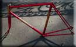

In general
the 1960's were not amongst the best years for the cycle trade.
The decline in cycle use, first begun in the mid 1950s continued
through the 1960s.
Rattrays were lucky however to work away throughout these years and were supported by many faithful club men and women, They continued to produce many Flying Scots but their appears to have been a gradual shift towards producing more 'out and out' racing bikes equipped much as they were on the continent, but applied to a homebuilt "Scottish" frame. Click on the small photo to see each in greater detail |
| Frame Gallery |
1965 - 1966 |
 8 M |
 75 M |
 196 M |
||
1967 - 1968 |
 51 N |
 89 N |
 94 N |
 132 N |
 153 N |
 230 N |
 269 N |
 309 N |
 366 N |
 423 N |
|
 476 N |
 481 N |
 502 N |
 |
 525 N |
|
 610 N |
|||||
| 1969 - 1970 |
 75 O |
 84 O |
 102 O |
 141 O |
 154 O |
| Unidentified |
Home |
History |
Models |
Gallery |
Identify |
Articles |
Links |
Contact |
'The Flying Scot' website Copyright © 1999-2019 Bob Reid, Last Updated Sunday, 26-May-2019 22:38 hrs.